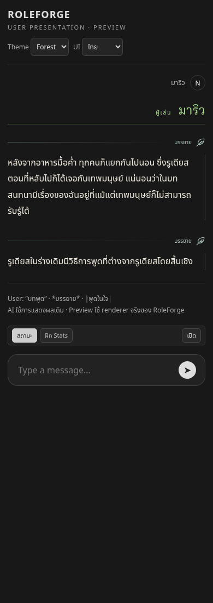
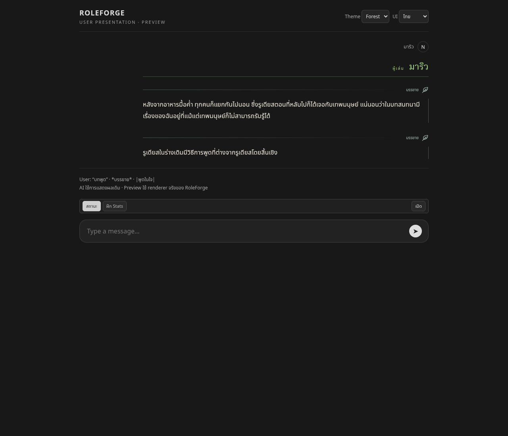
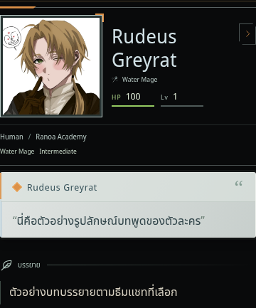
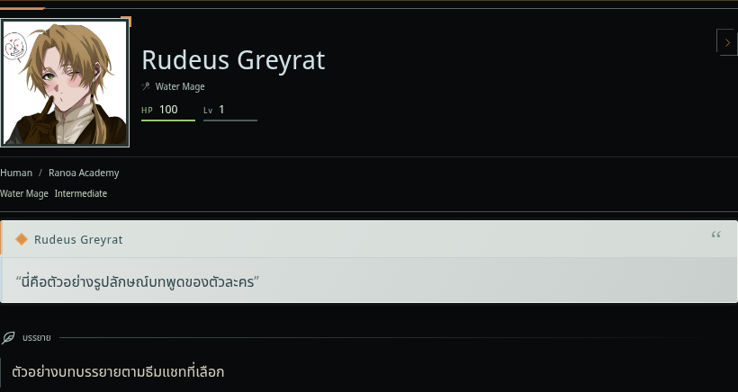

ภาพจาก renderer และ CSS จริงบน host จำลอง ใช้ข้อมูลตัวอย่าง ไม่มีการเชื่อมต่อแชทของผู้ใช้
รายละเอียดการแก้ไข · ทดลองขนาดกรอบภาพ 48–144 px
บล็อกอยู่ทางขวา เนื้อความชิดซ้าย ปากกาและเส้นอยู่ทางขวา ลดช่องว่างที่เกิดจาก padding เดิม


ใช้กรอบ Header, Dialogue และ Narrative ของแชทจริง พร้อมตำแหน่งภาพตามธีม


ตรวจ Original / Folio / Chapter / Codex / Aincrad ที่ 320, 390, 768 และ 1280 px ด้วยกรอบภาพ 48, 72 และ 144 px รวมการโหลด CSS ของ NPC Management ตามหลัง และข้อความผู้เล่นที่อยู่ร่วมกับ UI ของ Regex